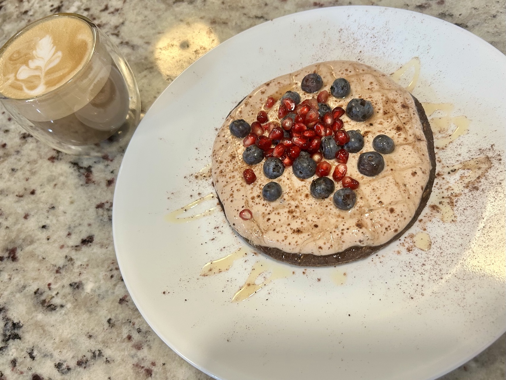
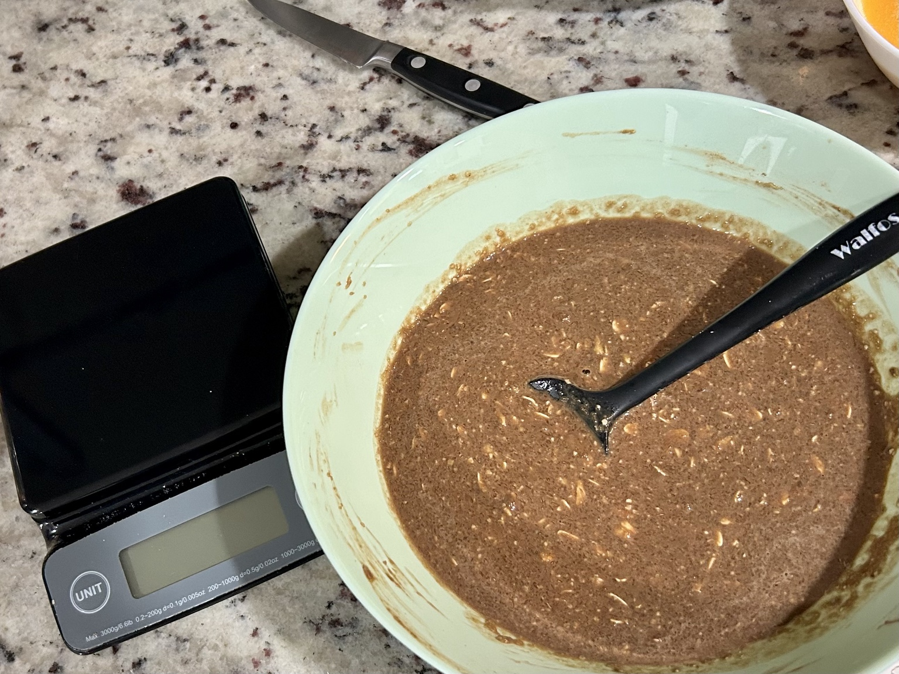
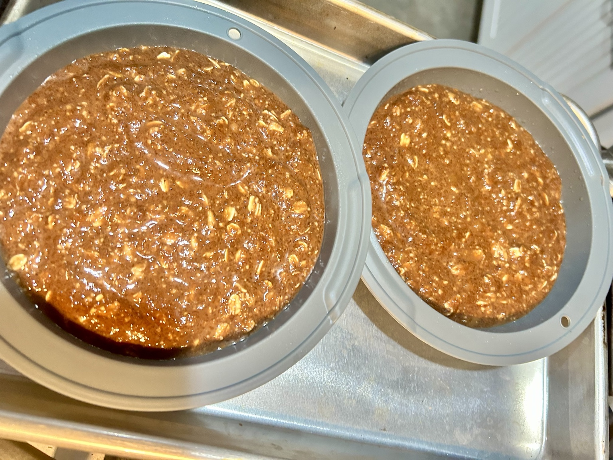
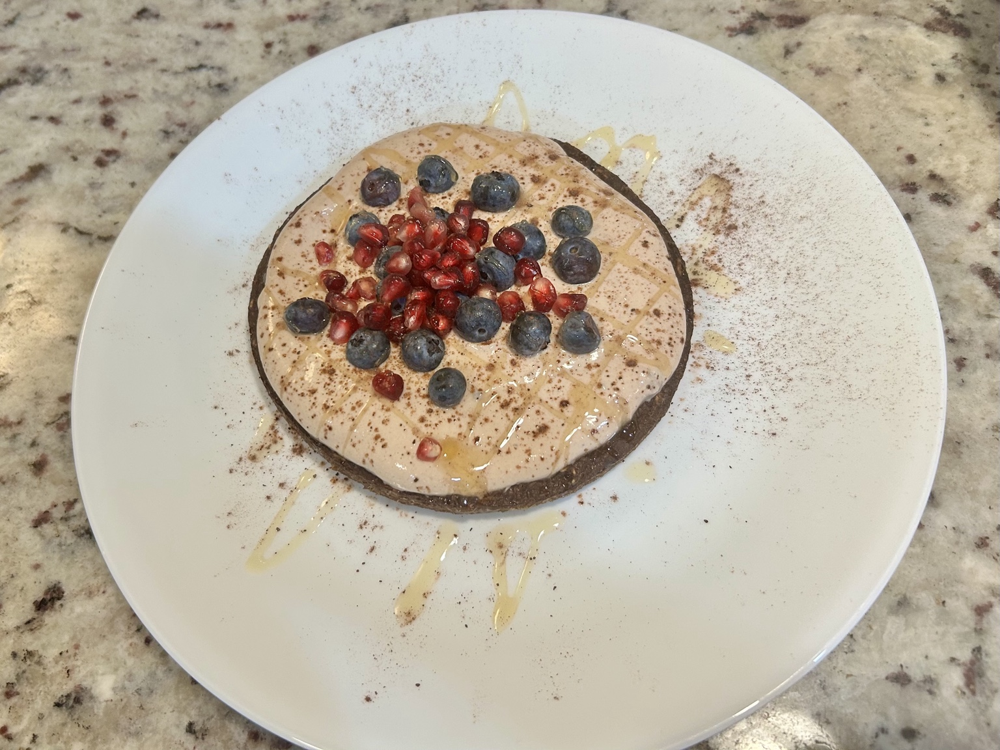
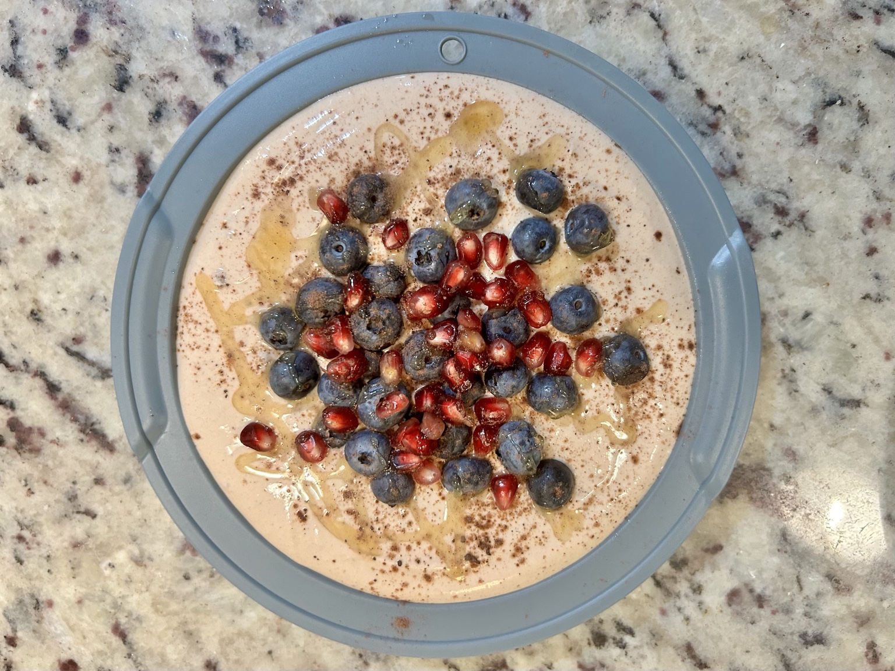

Breakfast
Tiramisu-Brownie Baked Oats
Chocolate baked oats soaked with coffee and finished with a cool Greek-yogurt top.





Ingredients
Baked oats
- 1 medium ripe banana (~120 g)
- 40 g rolled oats
- 20 g oat flour
- 1 large egg
- 10 g cocoa powder
- 4 g chia seeds
- 6 g whole psyllium husk
- 1/2 tsp baking powder
- 60 ml (2oz) strong coffee or espresso (so a double-shot)
- 1/2 cup (120 ml) skim milk
- 1 tsp vanilla extract
- Pinch of salt
Top
- 200 g nonfat Greek yogurt
- 5 g honey
- 30ml (1oz) strong coffee or espresso
- 1tsp vanilla extract
- 5 g cocoa powder, and for dusting
Method
- Mash the banana until smooth, then mix in the egg, coffee, skim milk, and vanilla.
- Add the rolled oats, oat flour, cocoa, chia, psyllium, baking powder, and salt. Mix well and let stand for about 10 minutes so the oats, chia, and psyllium hydrate.
- Pour into a small baking dish and bake at 350°F for about 25–30 minutes, until just set but still moist in the centre.
- Cool before topping.
- Mix the Greek yogurt with honey, cocoa, coffee and vanilla, spread over the cooled bake, and dust with cocoa. Chill before serving for a firmer, more tiramisu-like texture. Garnish e.g. with berries.
Serving
Serve chilled, cut into two portions.
Nutrition
Approximate nutrition per serving: about 290 kcal, 18 g protein, 44–46 g carbohydrates, 6 g fat, and 8–10 g fibre.
Notes
The aim is a brownie-like centre rather than a dry cake. The coffee and cold yogurt top make this feel much closer to tiramisu after chilling.
← Back to recipes